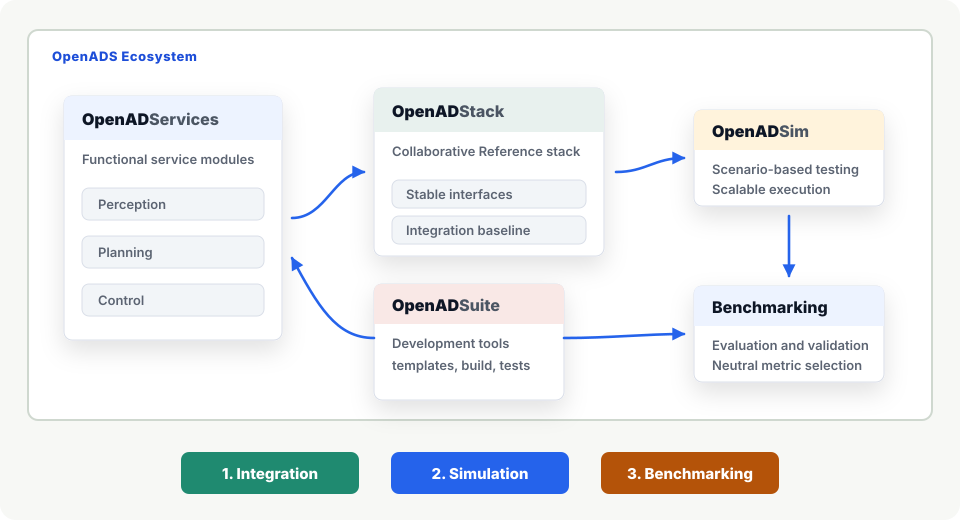

Microservice Architecture
ROS-package-level modules can be developed independently while CI/CD keeps them integrated in the overall system.
OpenADS explores how distributed partners can build compatible automated driving services and use benchmarks to identify stronger system compositions.
The work is embedded in Germany's Ecosystem Mobility 4.0 initiative and aligned with the European Connected and Autonomous Vehicle Alliance .
What is OpenADS?
OpenADS is a collaborative, open-source ecosystem for Automated Driving Systems.

ROS-package-level modules can be developed independently while CI/CD keeps them integrated in the overall system.
Each module defines its dependencies and container image, so developers can start work without running the full stack.
Modular interfaces support evolving ADS architectures without restructuring the entire system.
Open CI tests and benchmarks make contributed modules easier to evaluate, compare, integrate, or remove.
Tutorial focus
The tutorial explains why collaborative OpenADS development matters, introduces the reference architecture and real-world applications, and concludes with a 50-minute hands-on session.
Why shared interfaces, reusable services, and neutral evaluation are needed for open AD systems.
Connect the OpenADS reference architecture to data, benchmarking, and fleet-management use cases.
Work with OpenADS, integrate OpenADServices, and run benchmark-oriented OpenADSim workflows.
2.5-hour program
Scope, learning objectives, and setup.
All organizersHow Ecosystem Mobility 4.0 enables collaborative OpenADS development across research and industry.
Timo WoopenHow OpenADServices, OpenADStack, OpenADSim, and OpenADSuite work together as a modular development and evaluation environment.
Raphael van KempenThree examples of how OpenADS supports practical use cases.
Integrating OpenADServices into OpenADStack and evaluating them with OpenADSim, OpenADSuite, and neutral benchmarks.
Christian Geller, RWTH Aachen University Raphael van Kempen, Thinking Cars GmbHLessons learned and next collaboration steps.
All organizersPractical setup
The tutorial is designed for intensive participant interaction. Motivation, architecture, and ecosystem applications frame the problem before participants work directly with OpenADS.
The 2.5-hour format keeps the tutorial compact and focused: a short setup, a motivation talk, an architecture overview, practical application examples, and a hands-on session.
Researchers, engineers, suppliers, and industry stakeholders interested in OpenADS, supplier integration, service selection, simulation-based evaluation, and pre-development validation.
Faster integration, more transparent software selection, and reduced risk through reproducible cross-partner validation.
Organizing team
RWTH Aachen University
FZI Forschungszentrum Informatik
Thinking Cars GmbH
RWTH Aachen University
RWTH Aachen University
Starwit Technologies GmbH
FZI Forschungszentrum Informatik
FZI Forschungszentrum Informatik
Contact
Reach the organizing team at opensource@ika.rwth-aachen.de .